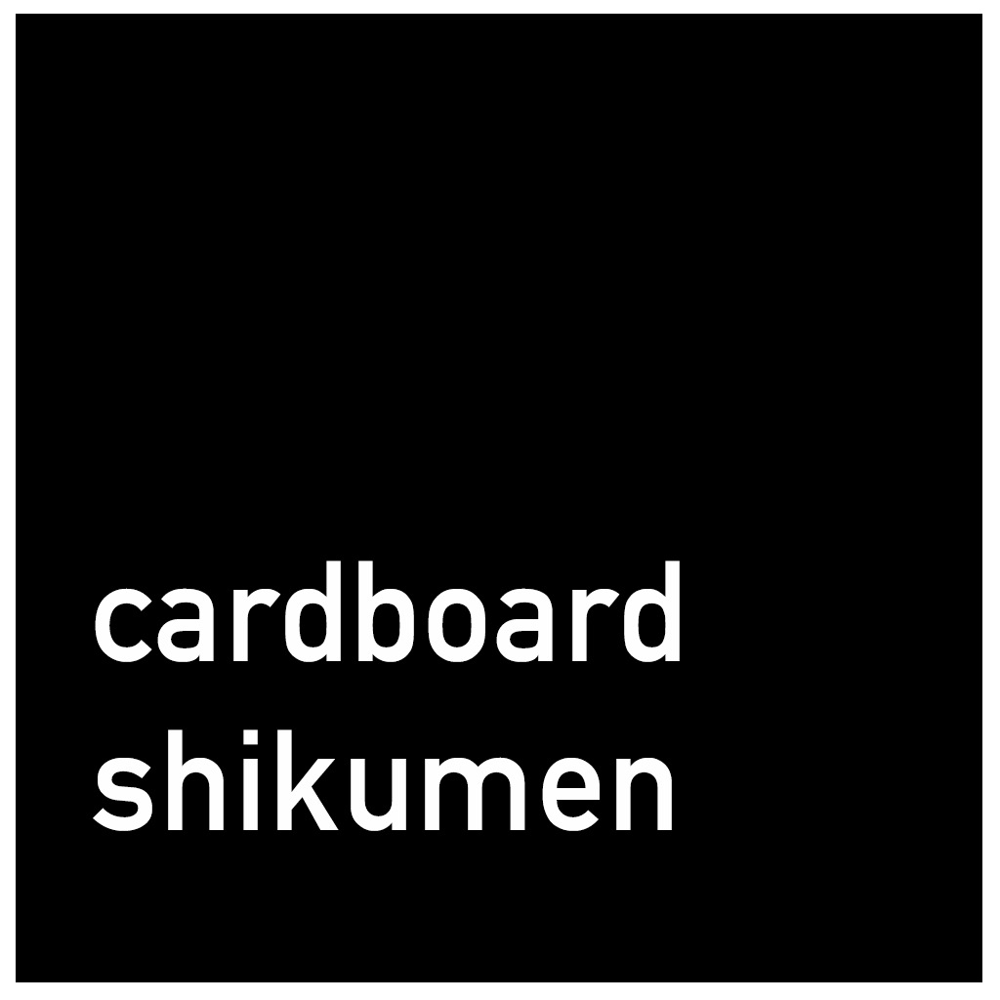

wander around a demolished traditional Shikumen neighbourhood in Shanghai - in virtual reality.
before you start
- Close other apps running on the background
- Ensure your web browser (Google Chrome recommended) has been updated to the latest version
vr technical faq
- How to get VR experience in Cardboard Shikumen?
- To get a VR experience in Cardboard Shikumen, you can either run the demo on a smartphone with Google Cardboard or on a WebVR-enabled desktop browser with a dedicated VR headset such as Oculus Rift (untested):
-
Smartphone requirements: iPhone (>= 5) or Android phone with gyroscope sensor released after 2013 (e.g. Moto X, Moto G 2, Samsung Galaxy S5, Google Nexus 5, etc). Cardboard version 2 (the version without magnets). -
WebVR-enabled browser requirements: Experimental versions of Chrome or Firefox (available to download from MozVR's website). Dedicated VR headset should be configured per instructions on the website. -
In both scenarios, a high-speed Internet connection is highly recommended.
-
I encountered a blank screen / corrupt texture during use. What happened?- The browser failed to render some of the elements. This can be caused by multiple factors. Under most circumstances, a reload should solve the problem. If the problem persists, check your internet connection, ensure your browser (Chrome recommended) is updated to the newest version, try to clear the cache of your browser, and try again.
If the problem still persists after these steps are taken, please contact me.